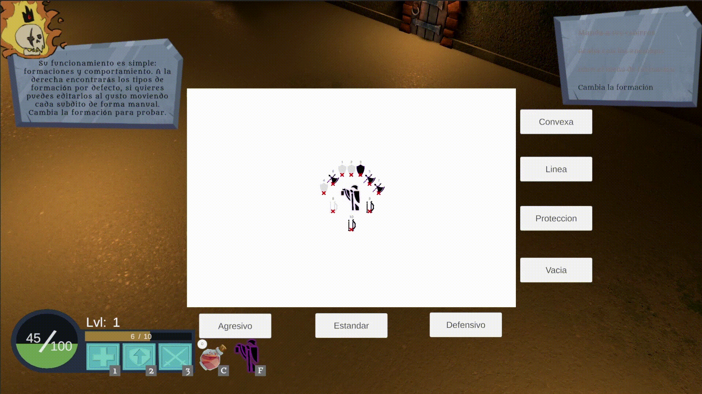
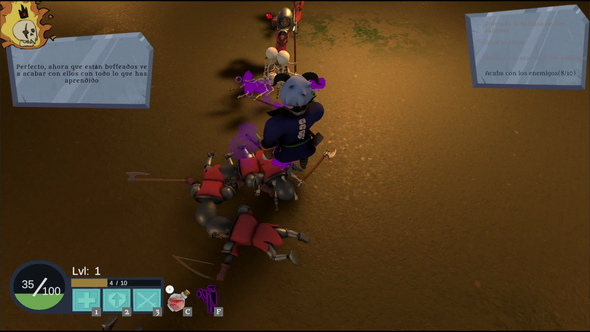

Axel Samuel Häcker García
Programador y Diseñador de Videojuegos en Unity
✉ Contactar por Email¡Hola! Gracias por visitar mi portfolio
En 2015 me mudé a Alemania para formarme y trabajar en el sector técnico. Tras 8 años, decidí dar el paso hacia lo que realmente me apasiona: el desarrollo de videojuegos. Para profesionalizarme, combiné mi trabajo con un bootcamp en Unity y posteriormente completé un Máster en Diseño y Programación de Videojuegos en EVAD.
Hoy me dedico en cuerpo y alma al desarrollo interactivo en Unity, aportando la disciplina, la capacidad de aprendizaje y la resolución de problemas adquiridas en mi trayectoria profesional.
Habilidades, Estudios e Idiomas
Habilidades
- Diseño de niveles
- Diseño y programación de IA
- Adaptabilidad e Improvisador
- Hambre de aprendizaje
Estudios
- EVAD Escuela superior de Videojuego y Arte digital
Idiomas
- Español (Nativo)
- Alemán
- Inglés
Proyectos Destacados
The Rising of Necromancy
 PC
PC
Diseño y Programación de Gameplay / IA
- Arquitectura FSM: Diseño e implementación de la Máquina de Estados Modular que gobierna la IA enemiga y aliada.
- Sistemas de Formaciones: Motor de desplazamiento en grupo con mantenimiento de posición en tiempo real (NavMesh) y panel de edición de formación dinámico.
- Combate Táctico y Asignación: Algoritmo de detección, selección de objetivos y distribución de slots de ataque adaptados al tipo de arma (Melee/Ranged).
- Mecánica de Invocación: Sistema de spawneo e integración de unidades aliadas a la formación del ejército.


Wazungus Invasión
 Solo Developer (100%)
Solo Developer (100%)
Shooter en tercera persona de supervivencia por oleadas
- Arquitectura de Rendimiento (Object Pooling): Implementación de un sistema de Pool System centralizado para la gestión óptima de memoria en enemigos, proyectiles y loot, garantizando un framerate estable.
- Sistema de Oleadas & Spawn Dinámico: Motor de progresión por hordas con control de dificultad escalable y gestión de spawners distribuidos.
- Diseño de Niveles (Tarifa Old Town): Reconstrucción del casco antiguo de Tarifa adaptado a mecánicas de combate, rutas de flanqueo y chokepoints.
- Mecánicas de Combate & UI: Disparo modular con comportamiento diferido por tipo de proyectil, ataque especial AoE y minimapa en tiempo real.
- Arte y Sonido: Assets de uso libre.
The Elusive Knight
 Solo Developer (100%)
Solo Developer (100%)
Plataformas y Endless Runner
- Moveset Dinámico del Jugador: Cambia sus mecánicas, física y conjunto de habilidades según si está en zona de plataformas o en fase Endless Runner.
- Generación Procedural Grid: Sistema de generación aleatoria e instanciación dinámica de tramos de mapa mediante Grid.
- Power-Ups & Enemigos Regionales: Coleccionables con efectos temporales y variedad de enemigos con comportamientos únicos.
- Parallax Scroll Adaptativo: Motor de paralaje multicapa (Parallax System).